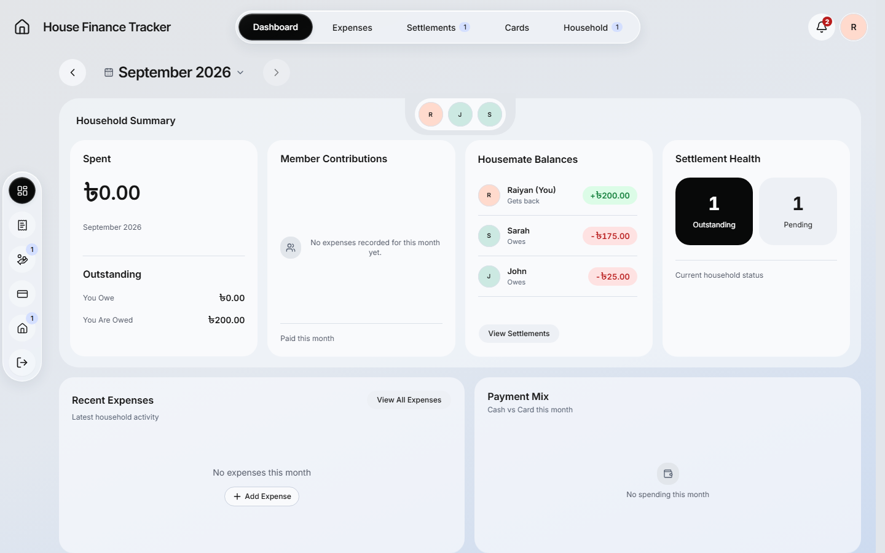
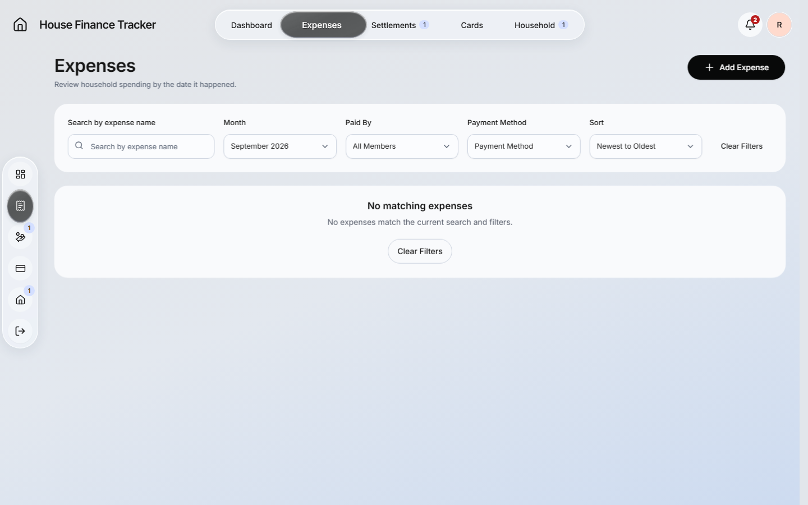
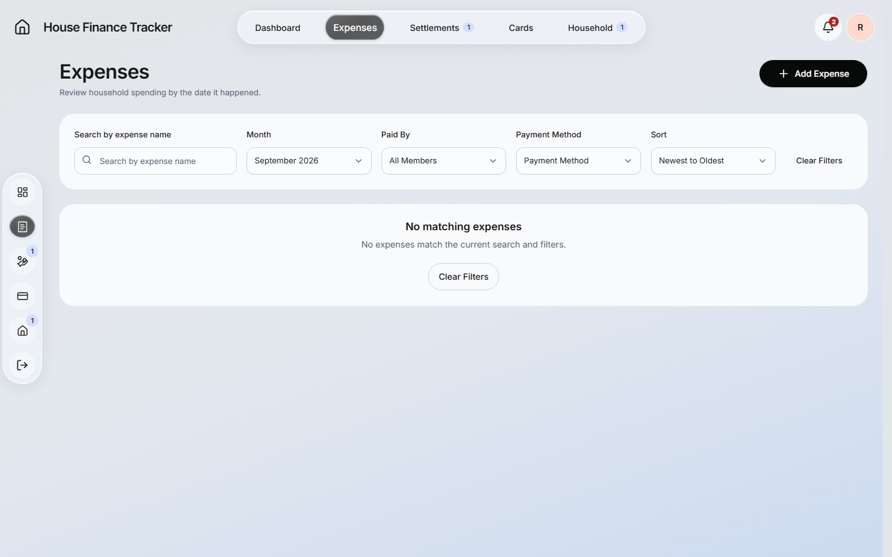
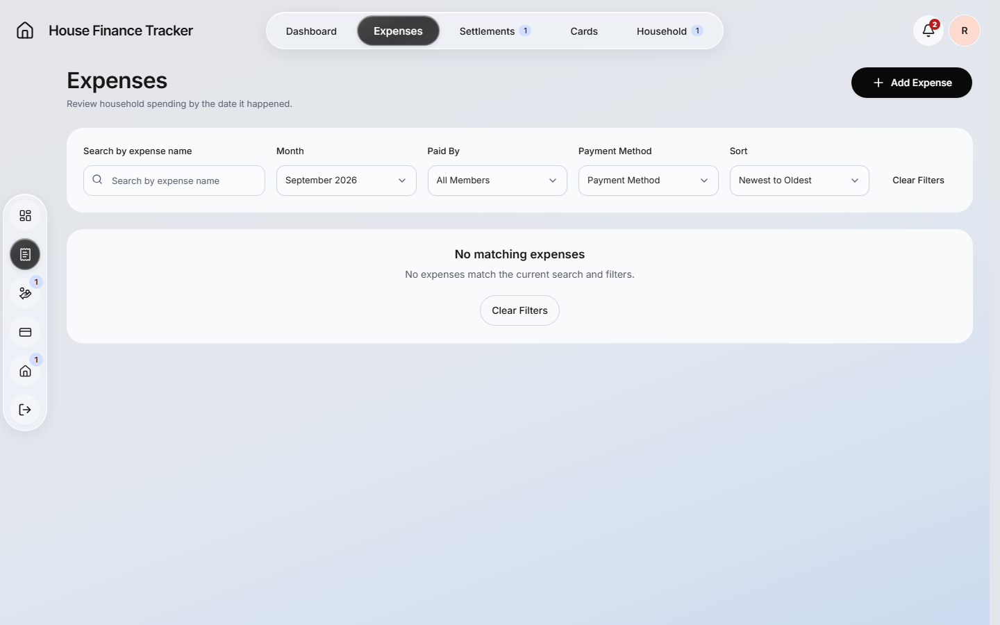
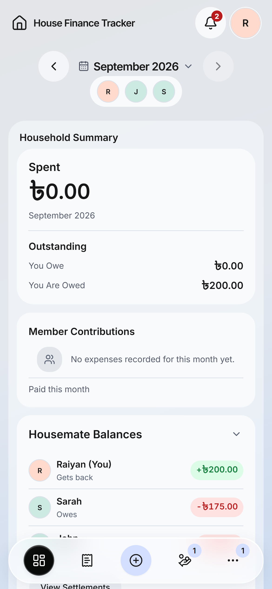
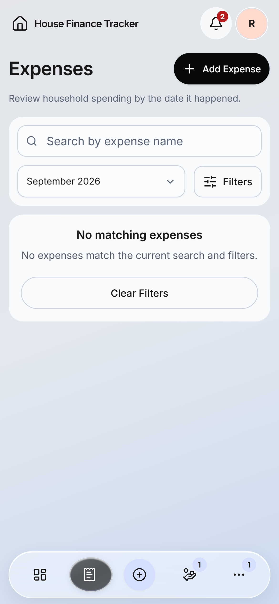
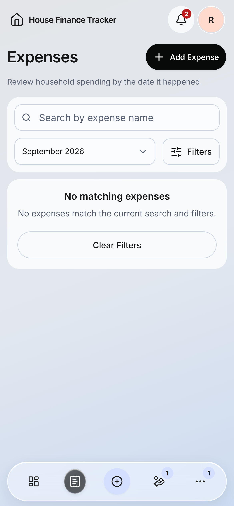
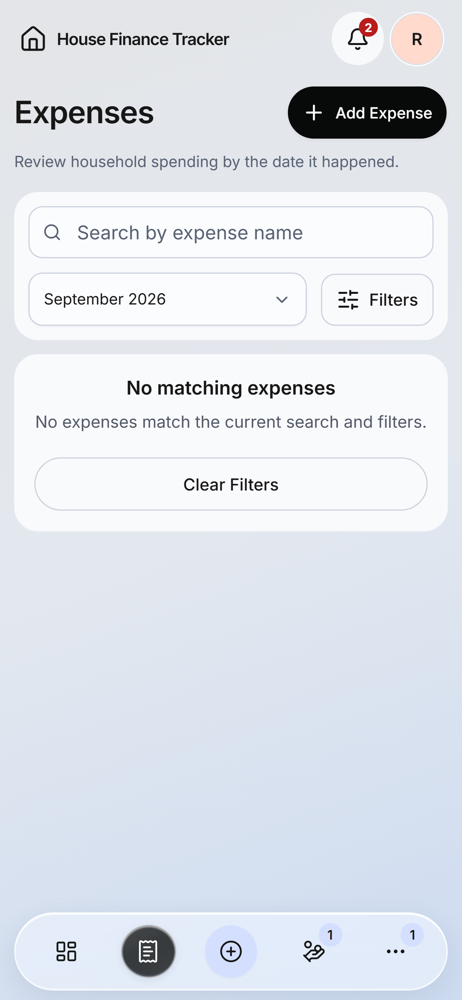

Rest

The same expanding, traveling and spring-settling selection now uses transforms with stationary clipped icons. The navigation surface retains its glass appearance. Desktop hover remains; mobile has no hover.
Verification record · Renderer comparison · Acceptance summary
| Profile | Layouts | Paints |
|---|---|---|
| Desktop | 220 → 2 | 655 → 34 |
| Mobile | 197 → 2 | 341 → 18 |
Optimized builds, real navigation DOM, six native effect replays and simulated 4× CPU slowdown. Traces confirm successful compositing. These are rendering-work measurements, not a physical-device FPS guarantee.
Recordings use synthetic fixtures and include route warm-up, normal-speed tab changes, then paused phase inspection at the end. Recording sampling is not an application frame-rate benchmark.








Phase images pause real native animations for inspection. Page layout and financial behavior are preserved. Implemented locally; not deployed.